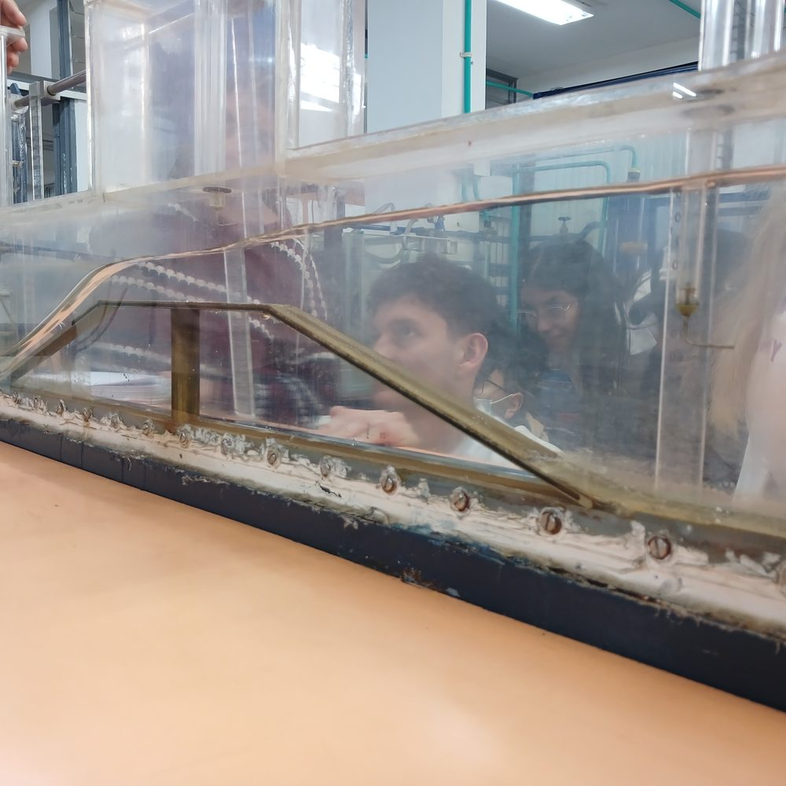

Docencia
Física de fluidos, hidráulica y laboratorios. Enseño a medir, a estimar órdenes de magnitud y a contrastar la teoría con el comportamiento real de los sistemas. Diseño de prácticas con instrumentación y datos.
Ver docenciaFísica experimental · Docencia · Hidráulica digital
Soy ingeniero físico (Universidad del Cauca, 2014), especialista en ingeniería de recursos hídricos y magíster en ingeniería hidráulica e hidrológica. Enseño física de fluidos, hidráulica y laboratorios, y trabajo en instrumentación, análisis de datos y herramientas computacionales para entender el agua.
En contexto
Canales de vidrio, compuertas, reglas y estudiantes alrededor del fenómeno. Una parte del trabajo se ve así.

Qué hago
Cómo entender y gestionar el agua con modelos, mediciones y datos que resistan la verificación.
Física de fluidos, hidráulica y laboratorios. Enseño a medir, a estimar órdenes de magnitud y a contrastar la teoría con el comportamiento real de los sistemas. Diseño de prácticas con instrumentación y datos.
Ver docenciaCalidad del agua, instrumentación y análisis de datos. El objetivo es convertir mediciones dispersas en interpretaciones físicas útiles.
Ver investigaciónAutomatización, simulación y flujos de trabajo reproducibles con Python, EPANET, iRIC, QGIS, DualSPHysics y ParaView.
Explorar el enfoqueLíneas de trabajo
Cuatro líneas que se alimentan entre sí: sin medición no hay modelo, y sin modelo la medición se queda corta.
Caracterización, monitoreo y análisis de variables fisicoquímicas en sistemas naturales y de abastecimiento.
Redes a presión, flujo en lámina libre y simulación de fenómenos con herramientas de código abierto.
Instrumentación, sensores, adquisición de datos y diseño experimental para prácticas docentes e investigación.
Scripts y utilidades que reducen el trabajo repetitivo y dejan trazabilidad sobre cada resultado.
Herramientas
Una caja de herramientas heterogénea, elegida por el problema y no por la moda.
Cada herramienta cubre una parte del problema: EPANET para redes a presión, iRIC para morfodinámica fluvial, DualSPHysics para flujo con superficie libre, QGIS para análisis territorial y ParaView para inspeccionar simulaciones. Python es la argamasa que une las piezas.
Cómo trabajoDocencia, investigación aplicada, desarrollo de herramientas o asesoría en modelación hidráulica.
Escribir un mensaje